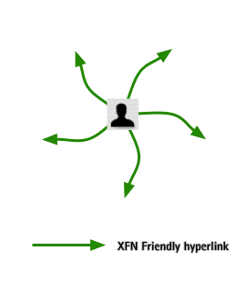
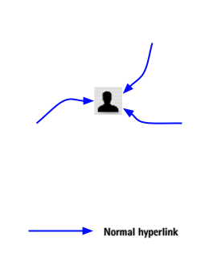
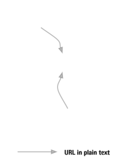
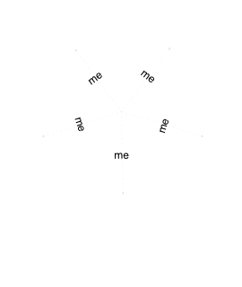
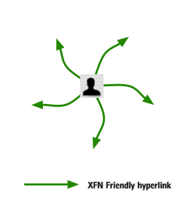
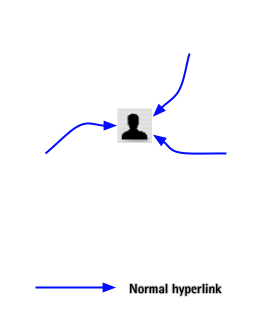
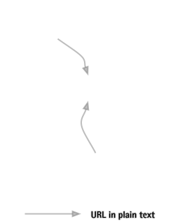
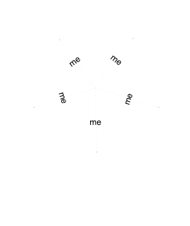

S5 Testbed
Daniel Mendler
What Is S5?
- It's a Simple Standards-based Slide Show System
- One XHTML document provides all of the slide show's content
- CSS handles the layout and look of the slides
- JavaScript handles the dynamic aspects of the show
- That's all there is to it! (skip to summary; demonstrates links internal to the slide show)
- I have notes here!
- Keen.
- Remember to tell people that notes are a new feature in 1.2
Operatic Origins
- Opera 4 introduced Opera Show, a projection-mode style sheet technology (link demonstrates external link styling and window spawning)
- Allows a single XHTML document to be turned into a PowerPoint-like slide show
- Adding screen and print style sheets allows for multi-medium views of a single document
- Highly efficient, but highly browser centric...
- S5 and OperaShow diverged greatly in S5 1.1
- S5 1.2 should (we hope) bring them into harmony once more
Incremental Display
- Keep hitting/clicking "next" as long as it isn't the control link (»)
- Bullet points are revealed one by one
- All based on class name of
inc - Lists can be classed to make items appear individually
- Individual items can be classed as well to create "animations"; see Derek Featherstone's example
- All based on class name of
- Let's try it again, but without the first bullet point being pre-highlighted...
Incremental Display II
- Keep hitting/clicking "next" as long as it isn't the control link (»)
- Bullet points are revealed one by one
- All based on class name of
incremental - Lists can be classed to make items appear individually
- Individual items can be classed as well to create "animations"; see Derek Featherstone's example
- All based on class name of
- Notice how the sub-list was part of the parent bullet point; that was done on purpose
- Now to move on to other test slides!
PNG Alpha Tests
DIV with PNG background followed by foreground PNG
DIV with PNG background followed by foreground PNG
Incremental Animation
- A demonstration of just one of the many ways to accomplish simple animation-like effects (using a diagram from "XFN and...")
 







Embedded MathML
Embedded SVGS
In Summary
- With minimal scripting, we have recreated and improved upon a (currently) browser-specific technology, making it cross-browser in the process
- The S5 format is OSF 1.0 compatible
- S5 is a very flexible and lightweight slide show system available for anyone to use